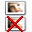
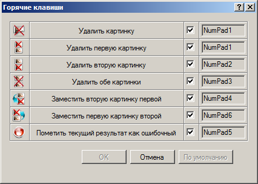

Горячие клавиши
Горячие клавиши позволяют пользователю ускорить работу с кнопками, расположенными на Панели просмотра. Ниже приведен их полный список:
| Кнопка | Описание действия | Горячая клавиша |
|---|---|---|
 или или
 |
Удалить картинку | NumPad1 |
 или или
 |
Удалить первую картинку | NumPad1 |
 или
 |
Удалить вторую картинку | NumPad2 |
 или или
|
Удалить обе картинки | NumPad3 |
 или или
 |
Заместить вторую картинку первой | NumPad4 |
 или или
 |
Заместить первую картинку второй | NumPad6 |
 |
Пометить текущий результат как ошибочный | NumPad5 |
| Показывать соседние изображения | Q + Control |
Если пользователя не удовлетворяют значения горячих клавиш по умолчанию, то он может выбрать свои собственные в окне Горячие клавиши:

Открыть это окно, можно нажав пункт Вид - Горячие клавиши в главном меню. Для того, чтобы сменить горячую клавишу, нужно кликнуть мышкой по соответствующей ячейке в четвертом столбце таблицы, а затем нажать требуемую клавишу или комбинацию клавиш (клавиша + Cotrol, Shift или Alt). После чего в этой ячейке отобразится новое значение горячей клавиши. Если значение клавиши отображается красным цветом, то это означает что данная комбинация уже используется вдругих целях. Так в программе зарезервированы клавиши Up, Down, PageUp, PageDown, Home, End, Control+A, Control+C, Control+Z и Control+Y для навигации по таблице результатов и отмены действий пользователя. Кроме того, горячие клавиши расположенные в одном окне, не должны совпадать между собой. Если убрать галочку в третьем столбце таблицы, то это приведет к запрету использования горячих клавиш для данной операции.